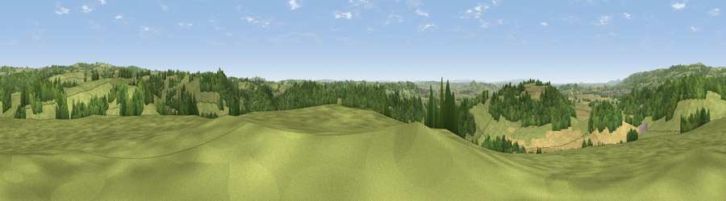

Worminster Sleight
#12448 in England · top 24% of its area beats it · near DinderThe view, rendered

A 360° render of this exact spot computed from the terrain model, tree cover and land cover — summer colours, afternoon light, calibrated against photographs of famous viewpoints. Real trees, hedges and buildings will differ in detail.
The panorama
Grey silhouette: terrain skyline in each direction (720 bearings, Earth curvature and refraction included). Dashed green: skyline with trees (+15 m) and buildings (+8 m) as obstacles. Blue strip: how far the ground is visible on each bearing.
Where the view opens
Wedge length = distance to the farthest visible ground on that bearing (vegetation-aware). Rings at 10, 25 and 50 km.
What fills the view
58% grassland · 32% woodland · 9% cropland ·
Angular shares of the visible panorama (visual magnitude), not map area. Landscape diversity 0.41 (0–1 Shannon).
Key numbers
More beautiful places nearby
The staircase of upgrades: each row has a higher view potential than everything closer. Driving times are estimates from straight-line distance, calibrated against real road routing — check an actual route before setting out.
| Place | Direction | Drive | Score |
|---|---|---|---|
| Viewpoint near Croscombe | ESE · 1 km | ~4 min | 64.8 |
| Viewpoint near North Wootton | W · 2 km | ~6 min | 67.9 |
| Viewpoint near West Horrington | NNW · 5 km | ~11 min | 70.9 |
| Viewpoint near West Horrington | NNW · 6 km | ~12 min | 73.2 |
| Viewpoint near Wookey Hole | NNW · 6 km | ~13 min | 73.5 |
| Glastonbury Tor | SW · 8 km | ~16 min | 75.8 |
| Viewpoint near Lamyatt | SE · 12 km | ~22 min | 77.8 |
| Beacon Batch | NNW · 17 km | ~30 min | 79.4 |
51.18638, -2.60614 · source: dobih hill · position refined by local search. Computed location — check access rights before visiting.